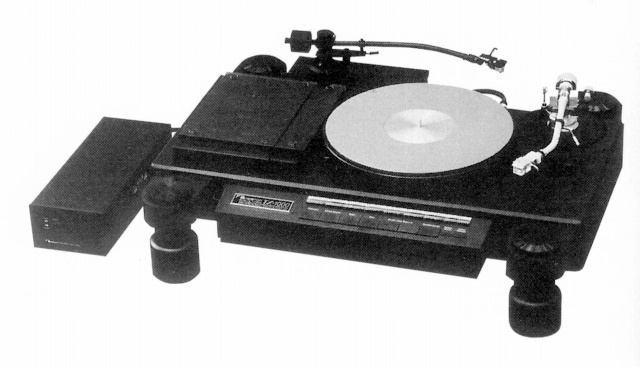
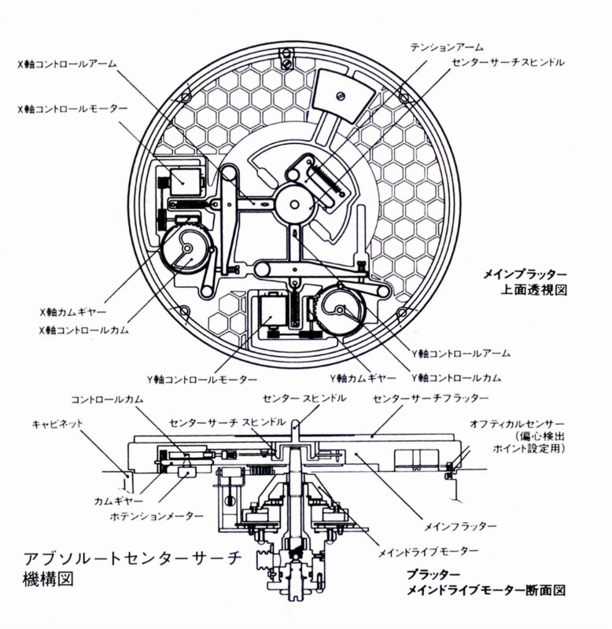
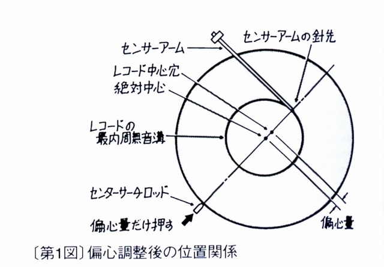

TX-1000

ターンテーブルのワウ＆フラッターのスペックは、あくまでもターンテーブル単体でのものであり、
実際にレコードを演奏した場合のものではない。その最大の差異はレコードの偏芯が原因である。
レコードの穴は必ずしもレコードの中心にある訳ではない。その補正に挑戦したのがナカミチの
アブソルートセンターサーチシステムであり、その機構を採用したのがTX-1000である。

セミオートプレイヤーDRAGON-CTではセンサー配置などを変えたシステムが採用されている。
